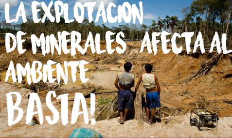

ORO | ||

| La minería de oro ilegal es una manifestación criminal que no es nueva en el país pero en los últimos 10 años, se ha disparado, y viene causando daño irreparable y masivo daño a las selvas y los ríos.Este comportamiento literalmente se convirtió en una "Mina de oro", que nutre de dinero a las arcas de organizaciones criminales incluyendo grupos guerrilleros y bandas delincuentes, a lo largo y ancho de el país. En muchos municipios del país, cerca de el 70 por ciento de el territorio se han detectado varias actividades de minería ilícita, el 60 por ciento de ella es de oro.“No es un cliché decir que el oro es mejor negocio que la coca y eso lo entendieron los grupos armados y los delincuentes”, “Se viene presentando un cambio y la economía ilegal ha pasado del narcotráfico y el secuestro como fuentes de recursos a la minería.La rentabilidad del negocio es evidente. Mientras un kilo de cocaína cuesta alrededor de 4 millones de pesos, un kilo de oro ronda los 90 millones de pesos. Una mina pequeña en promedio puede producir a la semana una libra de oro cuyo valor comercial está en 32 millones de pesos. Esas ganancias explican por qué, aunque se realizan grandes inversiones en maquinaria para las explotaciones ilegales, rápidamente estas se recuperan. “Una retroexcavadora, que es una de las principales máquinas utilizadas para la explotación minera, cuesta 500 millones de pesos en promedio. El dueño de la máquina recibe 1,6 millones de pesos por día de alquiler en una mina ilegal, lo que quiere decir que en menos de un año de trabajo se logra pagar el costo del aparato, lo cual es muy buen negocio”, estas son varias de las razones por las cuales hay tanta mineria ilicita en el pais.
publicidad | |